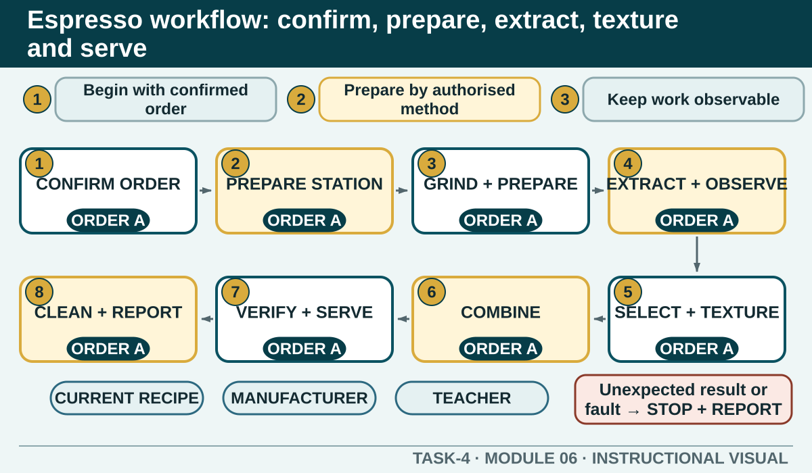

Espresso workflow: confirm, prepare, extract, texture and serve
Sequence espresso production around the confirmed order, current recipe, authorised machine method, observable quality and safe handover.
Learning intention
What success looks like
I can describe the full espresso workflow without inserting unverified settings or recipe values.
I can explain why order confirmation and mise en place occur before extraction begins.
I can identify observation and decision points during grinding, extraction and milk texturing.
I can sequence service and clean-as-you-go actions that protect quality and teamwork.
Core ideas
Build the complete picture
1
The workflow begins with the confirmed order
2
Prepare equipment and serviceware through the authorised method
3
Keep preparation consistent and observable
4
Extraction is both an action and an observation
Visual explanation
Espresso workflow: confirm, prepare, extract, texture and serve

Students rehearse the complete service system and locate where observation or communication changes the next action.
Worked example
The workflow begins with the confirmed order
Before touching ingredients or equipment, confirm the beverage, current size or serviceware choice, milk, authorised extras and any verified customer request. Read the current recipe card as a complete sequence. Identify which components can be prepared together and which must wait to protect freshness and quality.
Two similar milk beverages are ordered with different milk choices. The worker keeps the orders identifiable and confirms each recipe path before grinding or pouring milk.
Question the room
An order changes milk after the worker has read the original docket but before production begins. What should happen first?
Remember the change and leave the original record unchanged.
Update or confirm the authorised record and make sure the changed product remains identifiable before selecting milk.
Prepare both milk options and choose at service.
Apply
Espresso workflow sequence
A teacher has demonstrated the authorised machine and recipe. Rebuild the general workflow; exact dose, grind, extraction, milk and cleaning settings stay with that demonstration and procedure.
Order the eight stages.
Check the workflow.
Mark where order clarification, quality check and handover occur.
Exit ticket
Action · evidence · next step
Write a verbal rehearsal for one teacher-nominated espresso beverage. Include the confirmed order, station preparation, current recipe checkpoints, extraction and milk observations where relevant, presentation, handover and clean-as-you-go actions.
One action I would take
The evidence I would check
The person or source I would confirm with
My next improvement
1 of 8
Speaker notes and delivery prompts
Open with this purpose: Sequence espresso production around the confirmed order, current recipe, authorised machine method, observable quality and safe handover.
Use The workflow begins with the confirmed order to connect prior learning to the first observable workplace decision.
Model The workflow begins with the confirmed order by walking through this supplied example: Two similar milk beverages are ordered with different milk choices. The worker keeps the orders identifiable and confirms each recipe path before grinding or pouring milk.
Ask: An order changes milk after the worker has read the original docket but before production begins. What should happen first? Confirm the strongest response as Update or confirm the authorised record and make sure the changed product remains identifiable before selecting milk..
Listen for this misconception: Not yet. Memory and the active record now disagree, creating a predictable handover error.
Move into Espresso workflow sequence, then collect the saved response and finish with the source boundary: Authorised source note: The end-to-end workflow, mise en place, customer order, coffee preparation, milk process, presentation, cleaning and fault referral are source-supported. Exact settings, recipe values, extraction targets and operating methods remain current local controls. Source references: TEACHER-COFFEE-TERMS, SUPPORTING-COFFEE, TGA-SITHFAB025, TGA-SITHIND007, SITE-T4-V2.